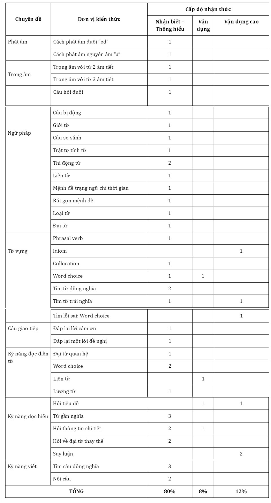

Xin chào các bạn, nay mình tổng hợp một số nhận xét của các thầy cô giáo dạy online nổi tiếng về đề thi tham khảo của Bộ GD&ĐT năm 2022 cho các bạn xem, để có cái nhìn, đánh giá đúng nhất và những dự đoán về đề thi thật năm nay nha!
1. Môn Vật lý
Mức độ đề thi tham khảo 2022 tương đương đề thi thật năm 2021. Nhưng so với đề tham khảo năm 2021 thì khó hơn nhiều. Dự đoán đề thi thật năm 2022 sẽ có độ khó ít nhất bằng đề tham khảo 2022, thậm chí khó hơn! – Thầy Đỗ Ngọc Hà – GV Vật lý!
 Ma trận đề thi tham khảo môn Vật lý năm 2022 – Thầy Đỗ Ngọc Hà tổng hợp!
Ma trận đề thi tham khảo môn Vật lý năm 2022 – Thầy Đỗ Ngọc Hà tổng hợp!
2. Môn Tiếng Anh
“ Nhận xét chung:
Nhận xét chung:
 Đề bám sát khung câu hỏi như đề thi THPTQG 2021
Đề bám sát khung câu hỏi như đề thi THPTQG 2021
 Kiến thức bao quát toàn chương trình học
Kiến thức bao quát toàn chương trình học
 Mức độ đề dễ hơn so với đề thi thật các năm trước
Mức độ đề dễ hơn so với đề thi thật các năm trước
 Đề này để đạt được 7+ chỉ cần học chắc 22/25 chuyên đề ngữ pháp và từ vựng trong sgk là ổn.
Đề này để đạt được 7+ chỉ cần học chắc 22/25 chuyên đề ngữ pháp và từ vựng trong sgk là ổn.
 Phần khó trong đề rơi vào dạng câu hỏi: từ cùng trường nghĩa, từ dễ gây nhầm lẫn, thành ngữ và dạng câu hỏi infer.” – Trích cô Trang Anh – GV Tiếng Anh
Phần khó trong đề rơi vào dạng câu hỏi: từ cùng trường nghĩa, từ dễ gây nhầm lẫn, thành ngữ và dạng câu hỏi infer.” – Trích cô Trang Anh – GV Tiếng Anh

Ma trận đề thi tham khảo môn Tiếng Anh năm 2022 – Nguồn Báo Lao Động
3. Môn Toán
 Lớp 12 chiếm 90%.
Lớp 12 chiếm 90%.
 Lớp 11 chiếm 10%.
Lớp 11 chiếm 10%.
 Tỷ lệ các mức độ: nhận biết 27 câu = 54%; thông hiểu 11 câu = 22%; VDT 7 câu = 14%; VDC 5 câu = 10%.
Tỷ lệ các mức độ: nhận biết 27 câu = 54%; thông hiểu 11 câu = 22%; VDT 7 câu = 14%; VDC 5 câu = 10%.

Ma trận đề thi tham khảo môn Toán năm 2022 – Nguồn: Ngọc Huyền LB
4. Môn Văn
– Câu 1 đọc hiểu: Ý 1, 2, 3: So với đề thi chính thức của năm 2021, độ khó của câu hỏi giảm đi đáng kể, không kiểm tra được khả năng đọc hiểu nội dung văn bản của học sinh. Hai câu hỏi đầu tiên, ở mức độ nhận biết và học sinh có thể không cần đọc toàn bộ ngữ liệu vẫn có thể trả lời được câu hỏi. Câu hỏi ở mức độ thông hiểu và vận dụng không khó, trên thực tế, học sinh có thể dùng hiểu biết của bản thân để trả lời mà không cần đọc, giải mã nội dung của các câu thơ. Ý 4 khi hỏi ý nghĩa của hai câu thơ đối với mỗi cá nhân nhưng vì nội dung câu thơ đã tường minh, vấn đề được nhắc tới cũng không mới nên rất không có sự thách thức, phân loại học sinh.
Câu 2: làm văn NLXH: Đối với đề bài này, có thể phân loại học sinh trên nhiều khía cạnh: vốn sống, khả năng sử dụng ngôn ngữ, tạo dựng văn bản, tư duy vấn đề… So với đề chính thức năm 2021, đề minh họa 2022 ở mức độ khó hơn nhưng vấn đề trao đổi cũng không mới, thiếu sự gắn bó với những vấn đề của đời sống, xã hội.
Câu 3: Trong đề thi những năm gần đây, nội dung đề bài này chưa xuất hiện (tâm trạng nhân vật bà cụ Tứ) nhưng ngữ liệu đã nằm trong hệ thống các tác phẩm trọng tâm ôn thi nhiều năm nên cũng không khó đối với học sinh. So với đề thi chính thức năm 2021, đề bài này hỏi nhiều nội dung và học sinh cần khai thác, phân loại các ý, luận điểm tốt hơn.
5. Môn Hóa
Đề thi có 72,5% số câu là lí thuyết; 27,5% là câu hỏi bài tập tính toán. Trong 40 câu hỏi của môn Hóa, chỉ có 4 câu hỏi ở mức độ vận dụng cao thuộc các chương: Đại cương kim loại, tổng hợp hóa vô cơ, este – lipit. Các câu hỏi này giúp đề thi phân hóa thí sinh tốt hơn.
Đặc biệt, đề thi không còn câu hỏi chứa dạng bài về Al3+ với ion OH- tạo Al(OH)3 kết tủa rồi kết tủa tan trong OH- dư, hoặc các dạng bài tập tính toán liên quan đến phản ứng hóa học giữa ion AlO2- với ion H+ tạo Al(OH)3 kết tủa rồi kết tủa tan trong H+ dư.
6. Môn Sinh
Đề thi có 70% câu hỏi lí thuyết (chiếm 28/ 40 câu) và 30% câu hỏi bài tập (chiếm 30/40 câu). 75% câu hỏi của đề thi (chiếm 30/40 câu) thuộc mức độ nhận biết – thông hiểu, trong đó 4 câu thuộc chương trình Sinh học lớp 11 và 26 câu thuộc chuyên đề của chương trình Sinh học lớp 12.
Độ khó của phần thi này đảm bảo học sinh trung bình – khá, có thể đạt điểm từ 6-7,5, đáp ứng tốt mục tiêu xét công nhận tốt nghiệp cho học sinh. 25% câu hỏi của đề thi (chiếm 10/40 câu) ở mức độ vận dụng – vận dụng cao, đều thuộc các chuyên đề của chương trình Sinh học 12, thuộc các chương: di truyền học quần thể, di truyền học người, cơ chế di truyền và biến dị, quần xã sinh vật. Đặc biệt các câu hỏi khó trong đề thi đa phần không đặt nặng về tính toán, có các câu vận dụng, vận dụng cao thuộc chuyên đề Sinh thái. – Nguồn Báo Lao Động
7. Môn Địa lý
Đề thi nằm hoàn toàn trong chương trình lớp 12, không có câu hỏi lý thuyết thuộc nội dung kiến thức 11. Nếu như đề thi tốt nghiệp THPT 2021 có 70% câu hỏi nhận biết, thông hiểu, 30% câu hỏi vận dụng, vận dụng cao thì đề tham khảo năm 2022 có 75% câu hỏi thuộc mức độ nhận biết – thông hiểu, 25% câu hỏi thuộc mức độ vận dụng – vận dụng cao tập trung ở các chuyên đề tự nhiên, các vùng kinh tế và thực hành kĩ năng.
4 câu hỏi cuối là những câu khó do đi sâu khai thác một vấn đề nhỏ, các phương án có độ nhiễu cao dễ gây nhầm lẫn. Nhìn chung, mức độ câu hỏi dễ hơn đề thi tốt nghiệp THPT 2021.
8. Môn Lịch sử
95% tổng số câu hỏi trong đề thuộc kiến thức lớp 12 và 5% câu hỏi thuộc lớp 11. Nếu như đề thi tốt nghiệp THPT năm 2021 có 75% câu hỏi thuộc mức độ nhận biết thông hiểu thì đề thi tham khảo có 80% câu hỏi thuộc mức độ này. Các câu hỏi này đều hỏi về những kiến thức cơ bản không làm khó thí sinh. 20% câu hỏi thuộc phần vận dụng – vận dụng cao, rải đều ở các chuyên đề lịch sử Việt Nam từ 1919 đến 1975, không có câu hỏi thuộc phần lịch sử thế giới.
Những câu hỏi chủ yếu xoay quanh dạng bài liên chuyên đề, liên hệ kiến thức lịch sử thế giới – lịch sử Việt Nam hoặc nhận xét, tổng kết cả giai đoạn lịch sử để tìm ra điểm đặc trưng. Đặc biệt, câu 37, 38, 39 là những câu hỏi liên chuyên đề, yêu cầu học sinh tổng hợp kiến thức. Độ khó của đề tăng lên so với năm 2021.